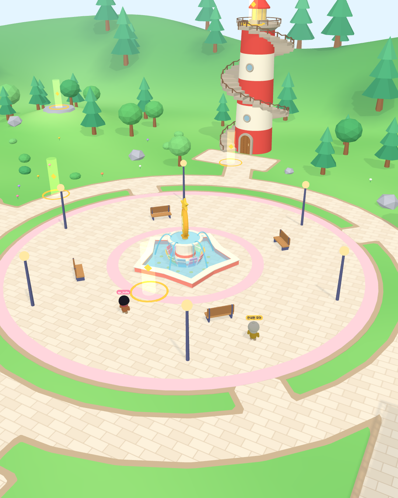
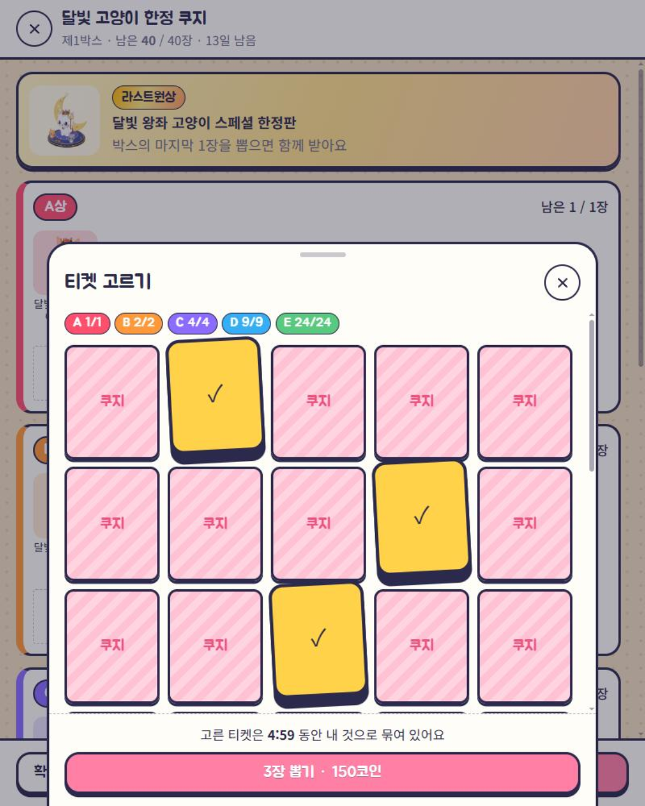
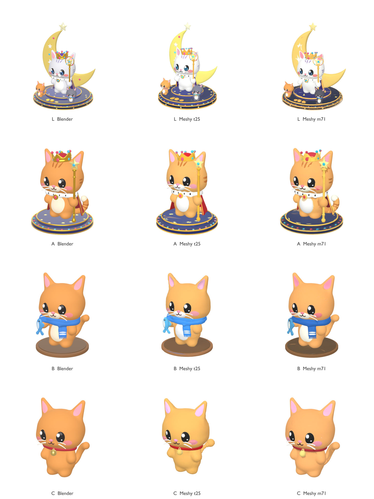

쿠지 광장: 진짜 사람이 들어오는 서비스
휴대폰으로 들어오는 3D 광장에서 코인을 모아 일본식 제비뽑기(쿠지)를 뽑고, 3D 상품을 모으고 자랑하는 웹 서비스입니다.



내가 정한 것
| 정한 것 | 내용 | 왜 |
|---|---|---|
| 오픈 범위 | 유료 결제는 약관·법률 확인이 끝날 때까지 열지 않고 무료 코인으로 오픈. 충전 화면과 ‘결제’ 문구도 숨김 | 돈이 오가는 기능은 법적 책임이 크고, 쓸 수 없는 버튼은 이용자를 헷갈리게 한다 |
| 확인 방식 | “고쳤어요” 보고 대신 배포 뒤 실제 화면을 확인하고 기록 | 첫 QA에서 요청한 수정 13개가 서버에는 하나도 반영돼 있지 않았다 |
| 오픈 조건 | 가짜 접속자를 50명부터 600명까지 늘려 가며 서버가 버티는지 측정 | 사람이 몰렸을 때 끊기면 첫인상이 끝난다 |
| 관리자 안전장치 | 위험한 작업은 사유 입력 + 확인 창, 권한이 낮으면 버튼 숨김·IP 가림, 관리자 2단계 인증 | 운영자의 실수 한 번이 이용자 피해로 이어진다 |
| 약속은 기능으로 | 개인정보 처리방침에 적은 “기간이 지난 탈퇴 정보 파기”를 오픈 다음 날 자동 기능으로 배포 | 문서에 쓴 약속은 법적 책임이 된다 |
| 저작권 | 협업 작가님 상품과 닮은 시안을 반려하고, 3D 제작 첫 단계를 “기존 상품과 형태가 겹치는지 점검”으로 정함 | AI는 비슷하게 잘 만든다. 베끼지 않았는지는 사람이 본다 |
| 3D 비용 | 그림 시안을 먼저 3장만 만들어 확인한 뒤 나머지 진행. 단순한 키링 6종은 유료 생성 대신 Blender로 제작 | 한 번에 다 만들면 틀렸을 때 비용이 그대로 버려진다 |
| 상품 구성 | 겨울 쿠지를 기존 판 장수(88장)에 억지로 맞추지 않고 78장 + 라스트원 1개로 확정 | 숫자를 맞추려고 상품 질을 낮추지 않는다 |
목표
온라인 쿠지는 버튼 하나 누르는 뽑기가 되기 쉽습니다. 친구들이 모이는 3D 광장에 가판대를 두고, 남은 상품판을 보며 뽑고, 뽑은 3D 상품을 자랑하게 만들고 싶었습니다. 그리고 데모로 끝내지 않고 실제 사람을 받는 서비스로 열었습니다.
AI에게 맡긴 방식
- 기획·디자인·개발·QA·마케팅 폴더를 나누고 팀별로 결과물을 남기게 함
- 관리자 페이지: 기획(메뉴 14개) → 구현 계획 → 화면 설계(디자인팀장 수정 5건) → 개발 → 테스터 화면 확인
- 테스터 AI가 실제 사이트에 들어가 이용자처럼 확인하고 캡처와 함께 보고
- 3D 경품은 표준 절차(시안 → 사진화 → 3D 생성 → 자동 점검 → 다듬기 → 검토)로 고정
결과
| 오픈 | 2026년 11월 23일 |
| 가입자 | 오픈 5일 차 70명 |
| 개발 기록 | 11.11 ~ 11.26, 커밋 130개 |
| 부하 테스트 (11.22) | 가짜 접속자 50 → 100 → 200 → 300 → 450 → 600명. 모든 단계 접속 100%, 끊김 0. 600명일 때 응답 지연(상위 5%) 32.2 ms, 서버 CPU 평균 42% |
| 관리자 페이지 | 메뉴 14개 설계, 관리자 역할 4개, 2단계 인증, 위험 작업 확인 창 |
| 운영 기능 | 공지·점검 모드, 채팅·신고 처리, 이벤트·보상 지급, 통계, 문의 답변, 보관 기간 지난 기록 자동 파기 |
| 법무 문서 | 이용약관, 개인정보 처리방침, 동의 흐름, 환불정책, 법률 검토 메모 (약관 동의·회원 탈퇴 기능과 함께 배포) |
| 마케팅 | 인스타 게시물 이미지 18장, 릴스 영상 7편, 카톡 오픈 문구, 링크 미리보기 이미지 |
배운 점 · 다음 개선
“고쳤다”와 “반영됐다”는 다른 말이었다. 그 뒤로는 AI의 보고보다 배포된 화면과 숫자를 먼저 확인합니다.
실서비스를 열자 만드는 일 못지않게 챙길 일이 많아졌다. 관리자 화면, 개인정보 파기, 약관 공지가 기능 개발만큼 컸습니다.
AI가 쓴 법률 문서는 초안일 뿐이다. 유료 결제를 열기 전에 전문가 법률 검토를 받을 계획입니다. 다음으로 손볼 것은 접속 기록 자동 파기, 서버 밖 백업, 실제 이용 데이터로 하는 뽑기 구성 점검입니다.